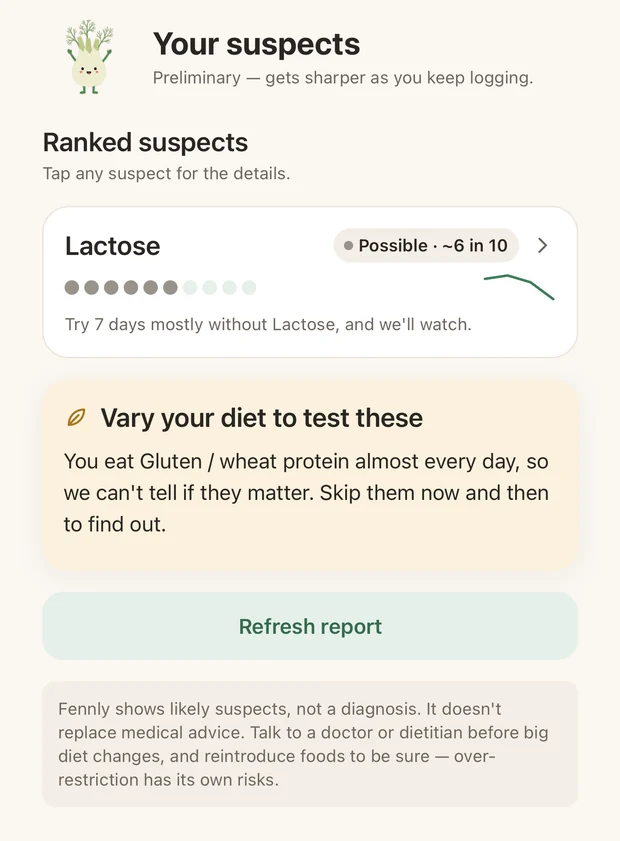
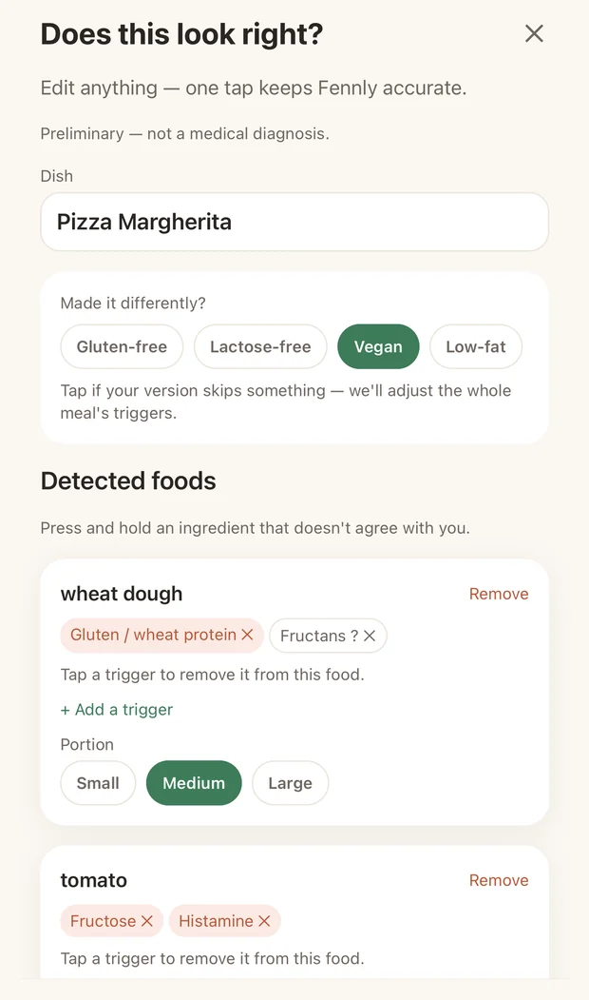
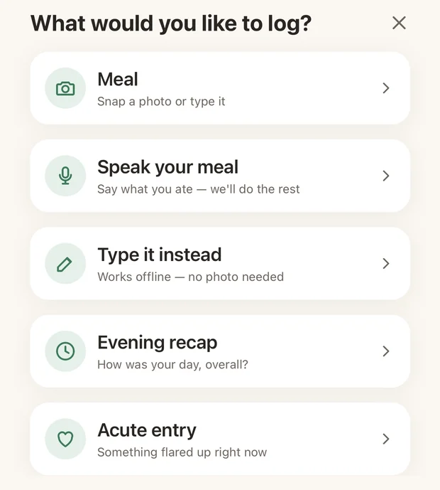
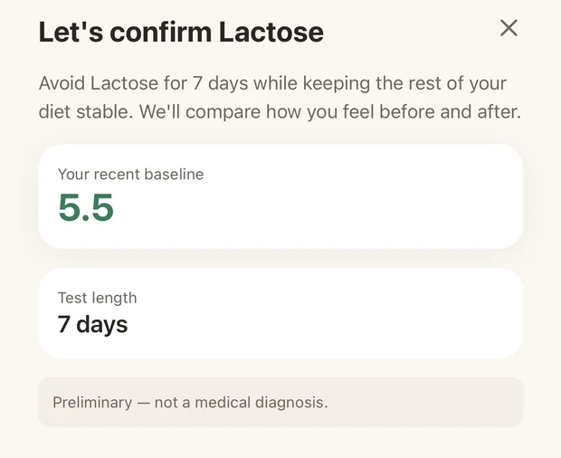
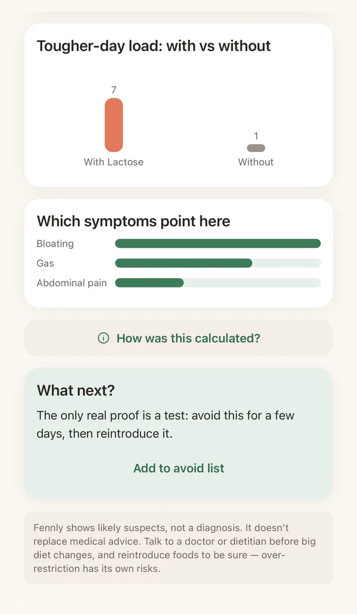

Bloated after eating and no idea why?
Photograph your meal. Fennly breaks it into ingredients, learns from how you feel, and ranks the foods most likely behind your symptoms. Then it helps you prove it.
Free to download. Your data stays in the EU. Delete it any time.

Three steps, about a minute a day
No weighing, no barcode hunting, no typing out every ingredient.
Snap your meal
Fennly recognises the dish and splits it into ingredients with their trigger categories. It knows a pizza is dough, cheese and tomato.

Say how you feel
Ten seconds in the evening. Bloating, cramps, fatigue, headache, skin. Or an acute entry the moment it hits.

Meet your suspects
After a few days Fennly ranks what is statistically most likely behind your symptoms, with a confidence score for each.
Why a plain food diary never worked for you
Intolerances do not behave like allergies. Fennly is built around how they actually work.
Delayed reactions
Symptoms often show up four to twelve hours later. Fennly looks across that window instead of blaming your last meal.
Dose, not presence
A splash of milk is fine, a latte is not. Fennly adds up the total load across the day rather than ticking a box.
Stress and sleep
A rough night makes almost everything worse. Those get factored in, so your lunch does not take the blame.
Fourteen categories
Lactose, fructose, sorbitol, fructans, histamine, gluten, caffeine, alcohol and more, tracked separately.
Works offline
Log anywhere, syncs when you are back online. Nothing is lost on a plane or in a basement restaurant.
Private by design
Hosted in the EU. Photos are only analysed after you explicitly agree. Export or delete everything in two taps.
A hunch is not an answer. So Fennly tests it.
When a suspect is strong enough, Fennly walks you through a proper elimination and reintroduction test: cut it for a set window, then bring it back, and read the verdict. That is the same method a dietitian would use, minus the paperwork.


See the difference, do not just feel it
Days with the suspect against days without, side by side. It is the moment most people stop guessing, and the chart you can hand to your doctor instead of trying to remember what you ate three Tuesdays ago.
Built for people who are tired of guessing
Whatever you already suspect, Fennly starts there and narrows it down.
Questions people ask
Is this a medical diagnosis?
No, and Fennly will never pretend otherwise. It surfaces statistical patterns from your own diary and labels them as suspects. Confirming an intolerance needs a test, and anything persistent belongs in front of a doctor.
What does it cost?
The app is free to download. Fennly Pro unlocks unlimited meal analyses, the full report with a confidence score per suspect, the guided elimination test and management mode. It is 4.99 € a week, or a one time lifetime purchase if you would rather not subscribe.
Do I have to photograph everything?
No. A photo is fastest, but you can speak your meal or type it. Manual text entries work offline and do not use an analysis.
How long until I see something useful?
Usually four to five days of logging. Intolerances need a few repetitions before a pattern separates from noise, and Fennly will tell you honestly when it does not have enough data yet.
Where does my data live?
On servers in the EU. Meal photos are sent for analysis only after you grant explicit consent in the app, and they are not used to train anything. You can export or delete your account and every entry from Settings.
Which triggers does it track?
Fourteen categories: lactose, fructose, sorbitol, mannitol, fructans, GOS, histamine, gluten, caffeine, alcohol, capsaicin, fat load, sulphites and salicylates.
Stop keeping the diary in your head
One photo a day is enough to start. In a week you will know more about your gut than you did in the last year.
Free to download · EU hosting · Cancel any time
Fennly is not a medical device. It does not diagnose, treat or cure anything. It shows suspected triggers derived from your own entries and always asks you to confirm them with a test. If your symptoms are severe, persistent, or come with weight loss, blood or fever, please see a doctor rather than an app.
Blähbauch nach dem Essen und keine Ahnung, woran es liegt?
Mahlzeit fotografieren. Fennly zerlegt sie in Zutaten, lernt aus deinem Befinden und zeigt dir, welche Lebensmittel am wahrscheinlichsten hinter deinen Beschwerden stecken. Danach hilft es dir, den Verdacht zu beweisen.
Kostenlos laden. Deine Daten liegen in der EU. Jederzeit löschbar.
Drei Schritte, rund eine Minute am Tag
Kein Abwiegen, keine Barcode-Jagd, kein Abtippen jeder einzelnen Zutat.
Mahlzeit fotografieren
Fennly erkennt das Gericht und zerlegt es in Zutaten mit ihren Auslöser-Kategorien. Es weiß, dass eine Pizza aus Teig, Käse und Tomate besteht.
Befinden erfassen
Zehn Sekunden am Abend. Blähbauch, Krämpfe, Müdigkeit, Kopfschmerzen, Haut. Oder ein Akuteintrag genau dann, wenn es losgeht.
Verdächtige ansehen
Nach ein paar Tagen zeigt dir Fennly, was statistisch am ehesten hinter deinen Beschwerden steckt, mit einem Sicherheitswert pro Verdacht.
Warum ein normales Ernährungstagebuch bei dir nie funktioniert hat
Unverträglichkeiten verhalten sich nicht wie Allergien. Genau darauf ist Fennly gebaut.
Verzögerte Reaktionen
Beschwerden kommen oft erst vier bis zwölf Stunden später. Fennly schaut über dieses Fenster statt die letzte Mahlzeit zu beschuldigen.
Menge statt Ja oder Nein
Ein Schuss Milch ist in Ordnung, ein Latte nicht. Fennly rechnet die Gesamtmenge über den Tag zusammen, statt nur ein Häkchen zu setzen.
Stress und Schlaf
Eine schlechte Nacht macht fast alles schlimmer. Das fließt mit ein, damit nicht dein Mittagessen die Schuld bekommt.
Vierzehn Kategorien
Laktose, Fruktose, Sorbit, Fruktane, Histamin, Gluten, Koffein, Alkohol und mehr, jeweils getrennt verfolgt.
Funktioniert offline
Überall erfassen, Synchronisierung sobald du wieder online bist. Nichts geht im Flugzeug oder im Kellerlokal verloren.
Datenschutz eingebaut
Gehostet in der EU. Fotos werden nur analysiert, wenn du ausdrücklich zustimmst. Alles exportieren oder löschen mit zwei Taps.
Eine Vermutung ist keine Antwort. Also testet Fennly sie.
Wenn ein Verdacht stark genug ist, führt dich Fennly durch einen richtigen Eliminations- und Wiedereinführungstest: für einen festen Zeitraum weglassen, dann zurückholen, Ergebnis ablesen. Dieselbe Methode wie in der Ernährungsberatung, nur ohne Zettelwirtschaft.
Den Unterschied sehen, nicht nur ahnen
Tage mit dem Verdächtigen gegen Tage ohne, direkt nebeneinander. Das ist der Moment, in dem die meisten aufhören zu raten. Und die Grafik, die du deiner Ärztin zeigen kannst, statt zu rekonstruieren, was du vor drei Dienstagen gegessen hast.
Für alle, die das Raten satt haben
Was auch immer du schon vermutest, Fennly fängt dort an und grenzt es ein.
Häufige Fragen
Ist das eine medizinische Diagnose?
Nein, und Fennly tut auch nie so. Die App zeigt statistische Muster aus deinem eigenen Tagebuch und nennt sie ausdrücklich Verdachtsmomente. Eine Unverträglichkeit bestätigt nur ein Test, und alles Hartnäckige gehört zur Ärztin oder zum Arzt.
Was kostet die App?
Das Laden ist kostenlos. Fennly Pro schaltet unbegrenzte Analysen frei, den vollen Report mit Sicherheitswert pro Verdacht, den geführten Eliminationstest und den Management-Modus. 4,99 € pro Woche, oder einmalig als Lifetime-Kauf, wenn du kein Abo willst.
Muss ich alles fotografieren?
Nein. Das Foto ist am schnellsten, du kannst deine Mahlzeit aber auch einsprechen oder tippen. Manuelle Texteinträge funktionieren offline und verbrauchen keine Analyse.
Wie lange dauert es, bis ich etwas sehe?
Meist vier bis fünf Tage. Unverträglichkeiten brauchen ein paar Wiederholungen, bevor sich ein Muster vom Rauschen abhebt. Fennly sagt dir ehrlich, wenn die Datenlage noch nicht reicht.
Wo liegen meine Daten?
Auf Servern in der EU. Fotos werden erst nach deiner ausdrücklichen Zustimmung zur Analyse geschickt und nicht zum Training verwendet. Konto und alle Einträge kannst du in den Einstellungen exportieren oder löschen.
Welche Auslöser werden erfasst?
Vierzehn Kategorien: Laktose, Fruktose, Sorbit, Mannit, Fruktane, GOS, Histamin, Gluten, Koffein, Alkohol, Capsaicin, Fettmenge, Sulfite und Salicylate.
Hör auf, das Tagebuch im Kopf zu führen
Ein Foto am Tag reicht zum Start. In einer Woche weißt du mehr über deinen Darm als im ganzen letzten Jahr.
Kostenlos laden · Hosting in der EU · Jederzeit kündbar
Fennly ist kein Medizinprodukt. Die App diagnostiziert, behandelt und heilt nichts. Sie zeigt Verdachtsmomente aus deinen eigenen Einträgen und bittet dich immer, sie mit einem Test zu bestätigen. Bei starken oder anhaltenden Beschwerden, bei Gewichtsverlust, Blut oder Fieber gehst du bitte zur Ärztin oder zum Arzt und nicht in eine App.